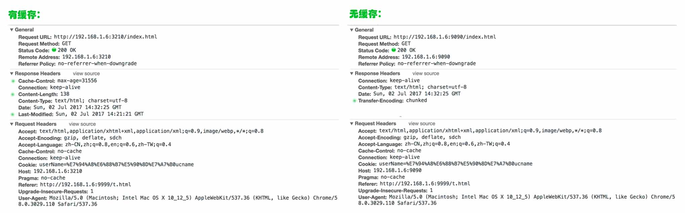

彻底解决 iframe 缓存不刷新
这是一篇为 “iframe 缓存不刷新” 洗地的文章。iframe 为这事背了这么多年的锅，是该有人管管这事了。
问题描述
当用 iframe 嵌入一个页面，被嵌入的页面明明内容已经改变了，但是呈现在 iframe 中的内容却还是之前的，如果在新浏览器 Tab 中打开 iframe 内嵌的页面也可以看到新内容，同样清除浏览器缓存也能解决 iframe 不呈现新内容的问题。在网上搜索一下可以找到这个类型的解决方案：
<script type="text/JavaScript">
var random = Math.floor(Math.random()*100000)
var url = 'http://www.freedonation.com/hunger/hunger_thankyou.php3';
document.write('<iframe src="' + url + '?random=' + random + '"></iframe>');
</script>
如果用这种方式解决问题就不会有这篇文章了，那为什么会对这种方案产生怀疑？回想了一下主要有以下几点：
- 1、iframe 真的有 bug 吗，所有页面都缓存起来不更新，这样的设计是在太诡异；
- 2、对于缓存策略，对所有页面不缓存肯定不是一个完美的策略；
- 3、前两点只是猜测，在研究问题时发现就算不加随机数有些页面是不缓存的。
问题分析和定位
第一回合
通过 Chrome 的 Network 就可以看到请求头和返回头：

一个重要的信息就是 from disk cache，大概意思就是请求内容没有从远程服务器拉，而是使用的本地硬盘缓存。搜了一下没找到这次请求到底有没有和服务器端交互，从浏览器中也不能明确这一点，但是这一点很重要，如果请求了后端就可以通过请求头来指定本地缓存是否失效，这对于缓存控制很有用，如果没请求那只能前端来采用上面提到的那种方案来强制请求新页面了。
于是抓包工具登场了，在本地构建了页面，通过抓包工具看并没有向服务器端发送请求，这真是很不愿意接受的事实，但事实却是如此，看来在前端加时间戳或随机数是一种很有效的解决方案，因为不向服务器端发送请求，服务器端的一切防止缓存都没有登场的机会。
第二回合
但是在做实验的时候发现了另一个怪异的现象，在没有配置缓存头的时候，页面是不被 iframe 缓存的，真是山穷水尽疑无路，柳暗花明又一村，于是一顿折腾构建了两个服务器容器，把有缓存和无缓存的响应头拿来对比一下：

一共四个主要的不同点：Cache-Control、Content-length、Last-Modified、Transfer-Encoding，通过“相面”重点看一下 Cache-Control。通过查资料得知这个字段可能有四个值：
- private 默认值，会缓存
- no-cache 不会缓存
- must-revalidate 强制重新生效，不缓存
- max-age 过时缓存失效，单位是秒
改一下服务器配置，通过正向和反向测试都OK (浏览器测试了 Chrome、Firefox、IE9)。
说说验证的过程：
首先是起两个服务器配置不同的请求头，我用的是 Koa，可以在 Demo 中找到具体的代码，重要代码摘录如下：
// 定制请求头
app.use(async function (ctx, next) {
ctx.set('Cache-Control', 'max-age=20');
await next();
});
// 在 cache-max-age 目录下启动服务
node --harmony index.js
然后是做一个父页面用 iframe 来签入两个子页面：
<body>
无缓存：
<iframe src="http://172.24.164.46:4000/index.html" width="100%" height="50px"></iframe>
有缓存反向验证：
<iframe src="http://172.24.164.46:4001/index.html" width="100%" height="50px"></iframe>
</body>
测试的流程是清除缓存然后访问父页面，再修改两个子页面的内容保存并刷新页面，结果是指定不缓存的页面内容更新了，指定缓存的页面内容没更新，等待 20 秒再刷新，指定了缓存 20 秒的页面刷新到了新内容。最后我们可以说各浏览器的 iframe 是可以识别并执行响应头的缓存策略的。
两种方案的总结和对比
场景一：如果 Demo 中的父页面是一个平台，子页面是业务方。
采用加随机数的方案，优点是子平台不用管缓存策略，缺点是丧失了缓存策略，或者说他的缓存策略就是永不缓存，这对于服务器端渲染和首页频繁访问的系统不是很好。
采用子系统配请求头的方案，优点是可以最大限度的发挥缓存优势，缺点是每个业务方都需要配置缓存头。
场景二：如果 Demo 中的父页面是一个平台，子页面是业务方，但是业务方会被多个平台签入。
这时会有一个优势反转，如果采用随机数方案，那么每个平台方都需要加随机数。
通过场景和方案的对比，随机数方案是一种简单粗暴的方式，适合短线解决问题；请求头方案适合大型系统的长线解决问题，侵入性比较小有人比较灵活。